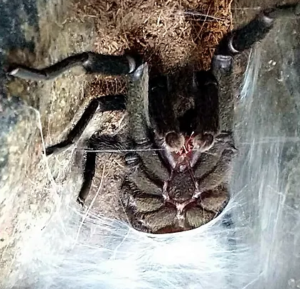
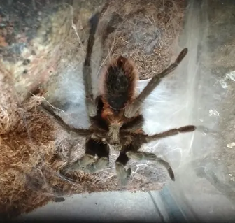
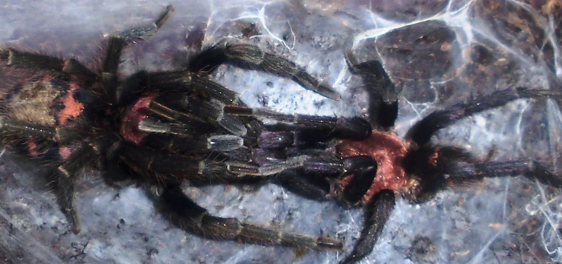
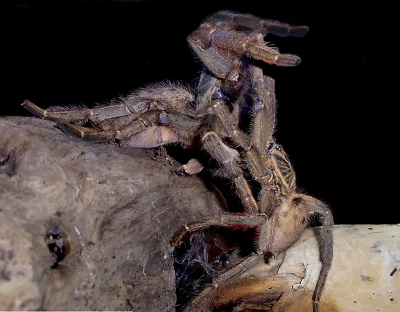
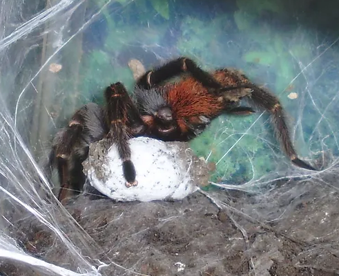

Spiderlings de Tapinauchenius violaceus saliendo del saco y mudando por primera vez fuera de éste.

Spiderlings de Aphonopelma serratum dispersandose fuera del ovisaco.

Tliltocatl verdezi es una especie de araña de la familia Theraphosidae, que se encuentra en México.
Las tarántulas son organismos que aparecieron hace millones de años y ha cambiado muy poco su biología, esto las hace organismos simples por llamar
así a su ciclo biológico, dentro de los arácnidos las tarántulas son de los representantes más prolíficos y prácticos en su descendencia, una hembra
puede poner entre 100 y 2000 huevos dependiendo de la especie, edad y condición física del ejemplar.
Una vez fuera del saco pueden pasar algún tiempo junto a la madre, esto puede ser desde unos minutos hasta algunos días,
si se quedan por mucho tiempo ella acabará comiéndolos, una vez pasado este tiempo cada uno de los spiderlings tomarán
su propio camino y desde ese momento se valdrán por sí mismos, siendo replicas en miniatura de su madre ya están capacitados
para cazar su propia comida. A partir de ahora empieza la complejidad de sus vidas, una carrera de obstáculos increíble,
midiendo en promedio .5 cm, son el alimento para un gran número de organismos, Artrópodos, anfibios, reptiles, aves y mamíferos,
sin contar con algunas afecciones que pueden acabar con sus vidas; infecciones, hongos, parásitos, aparte la selección natural
influye al cobrar la vida de los ejemplares más débiles, además de la devastación de sus madrigueras por incendios, inundaciones etc.
Es por esto que de un promedio de 800 spiderlings que eclosionan, solo el 1 % llegará a ser adulto y continuar el ciclo de la especie.
Spiderlings de Tapinauchenius violaceus saliendo del saco y mudando por primera vez fuera de éste.
Spiderlings de Aphonopelma serratum dispersandose fuera del ovisaco.
Si logra salir adelante establecerá una madriguera donde permanecerá hasta su etapa adulta, la cavará ella misma o aprovechará una abandonada por algún otro organismo, también puede aprovechar algún refugio natural debajo de un tronco caído, una piedra, entre las raíces de un árbol etc. Pasará sus primeros años acechando por las noches no lejos de su madriguera en espera de sus presas, creciendo con cada renovación de exoesqueleto y al cabo de unos años la maduración sexual jugará su rol para ambos sexos, las hembras que son más grandes y robustas llevan vidas más duraderas y tranquilas, rara vez se alejarán de su madriguera y podrán aparearse al menos un par de veces durante su vida. Mientras que los machos al contrario llevarán una vida siempre más corta y mucho más ajetreada, ellos madurarán al cabo de unos 3 a 7 años en ese momento no cambiarán de exoesqueleto ni una vez más salvo rarísimas excepciones (mudas supernumerarias), entonces una vez maduros y con sus órganos reproductores desarrollados y listos en unos días construirán una tela especial denominada espermática, en ella depositarán su esperma y llenarán sus émbolos para después ir en busca de su ya único objetivo de vida; encontrar una hembra receptiva para aparearse.

Diferencias físicas entre dos ejemplares adultos de Bonnetina sp. el macho a la derecha y la hembra a la izquierda.
Macho de Schizopelma sp. poniendo el esperma en la tela espermática que construyó previamente.
En esta imagen se muestra al mismo macho de Schizopelma llenando sus émbolos con esperma.
Las hembras llegan a su madurez sexual a los 5 - 7 años aproximadamente, dependiendo de cada especie estarán receptivas para el apareamiento durante un periodo
de tiempo estacional, que en la mayoría de las especies de Norteamérica es a finales del verano, así sus crías podrán eclosionar durante la primavera, esto representa
un clima favorable y una abundancia de presas a su disposición, a finales del verano a principios del invierno es cuando también maduran los machos y salen a deambular buscando pareja.
El apareamiento en las tarántulas es un acto que se denomina indirecto ya que no lo hacen a través de los genitales directamente como en mamíferos o aves, el cortejo
en estos organismos es un proceso de golpeteos y vibraciones para mandar mensajes específicos, el macho al encontrar la madriguera de una hembra se cree guiado por feromonas,
comienza a vibrar y dar golpeteos con los palpos y las patas delanteras, se piensa que es un mensaje para aclarar que es un macho maduro, que es de la misma especie, y que no es comida
o amenaza, si la hembra está receptiva y apta para aparearse contestará también con golpeteos y vibraciones, es un proceso que puede llevar pocos segundos o varios minutos según cada especie,
cuando la hembra ha recibido el mensaje y ha respondido positivamente comienza a salir de a poco de la madriguera para colocarse frente a frente, aunque en ocasiones sale apuradamente o en otras
el macho es lo suficientemente audaz para entrar a la madriguera a sacarla, una vez de frente el macho comienza a entrelazar sus patas con las de ella como si la acariciara y con sus espolones
tibiales engancha los colmillos de la hembra para evitar que ella en un momento pudiera querer comerlo antes de que terminara la cópula, (existen también varias especies en las cuales a los machos
maduros no se les desarrollan dichos espolones, esto es debido a que la cópula es mucho menos intempestiva y no los necesita) una vez enganchados los colmillos el macho comienza a dar golpeos con
sus pedipalpos en la parte ventral de la hembra, ayudado con ellos y sus patas delanteras la levanta para posicionarse debajo y poder insertar en la abertura de la espermateca de la hembra sus ganchos
espermáticos situados en los bulbos palpales, lo hace uno a la vez y sin dejar de realizar vibraciones.
Una vez que el macho termina procede a alejarse de a poco de la hembra sin soltar sus colmillos, una vez soltándolos comienza a correr en otra dirección para tener una oportunidad de aparearse de nuevo c
on otra hembra, en una buena cantidad de ocasiones la hembra terminará devorándolo, esto más que cruel es benéfico en todo caso ya que aporta una muy buena cantidad de nutrientes y mejora el desarrollo de las crías.
En la imagen se observa al macho de la especie Chilobrachys fimbriatus (izquierda) acercarse a la madriguera de la hembra (derecha), vibra y ella responde y se acercan de a poco.
En la imagen se muestra una pareja de Davus pentaloris tocandose y entrelazando sus patas delanteras en el momento previo a que el macho enganche los colmillos de la hembra.
En la imagen se observa una pareja de Pterinochilus lugardi, el macho (derecha) tiene enganchados los colmillos de la hembra (izquierda), se posiciona debajo de ella para golpetear con sus pedipalpos y llegar a su zona epiginial.
Una vez que se ha realizado el apareamiento, la hembra se asea quisquillosamente el área genital, después se alimentará con mayor frecuencia para ganar peso y al cabo de unos 3 meses en promedio se encerrará en su madriguera y cubrirá la entrada con seda, ella hará una cama de seda donde depositará los huevos y a continuación soltará el esperma del macho que guardó en la bolsa espermática y es hasta entonces que los huevos se fertilizan, una vez hecho esto, ella envolverá los huevos en varias capas de seda hasta formar un saco, las capas de seda son para protección, de impurezas, para mantener estable la temperatura, para que el saco sea impermeable y algunas especies colocan setas urticantes en la última capa del saco para protegerlos de otros organismos que intenten depredar a las crías aún dentro del saco, una vez terminado ella cargará el saco y por un periodo promedio de dos a tres mees más lo cuidará celosamente, lo moverá constantemente para evitar que los huevos se peguen y se pudran, algunas especies no cargan con el saco, tejen una especie de hamaca de seda asida a una pared de la madriguera y en ella colocarán el saco.

En la imagen se observa a una hembra de Grammostola rosea preparándose para desovar, ya ha formado una cama de seda y ha tejido al rededor.
En la imagen se muestra una hembra de Bonnetina sp. protegiendo su ovisaco ya totalmente formado.
Ovisaco abierto donde se muestran los huevos en pleno desarrollo.